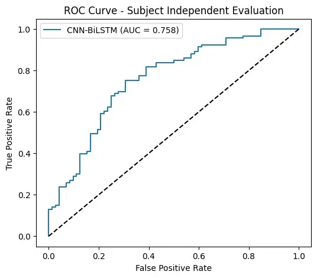
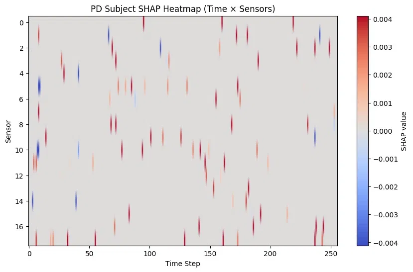
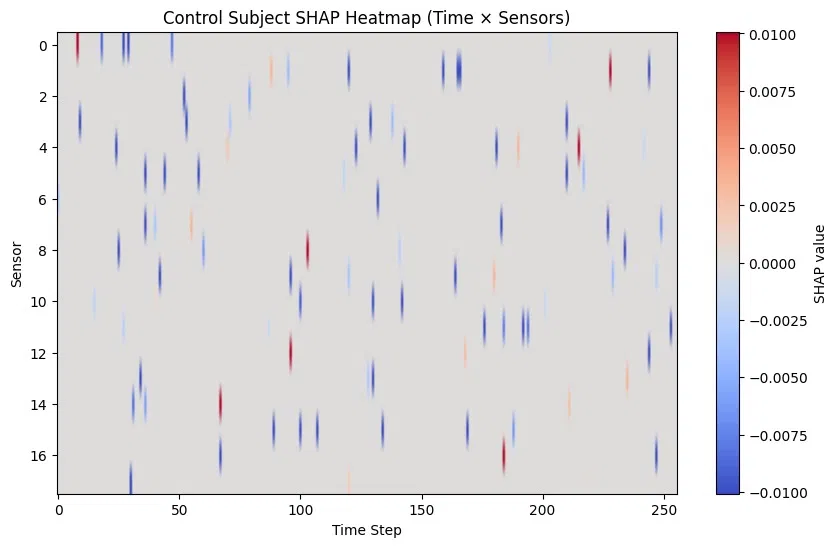
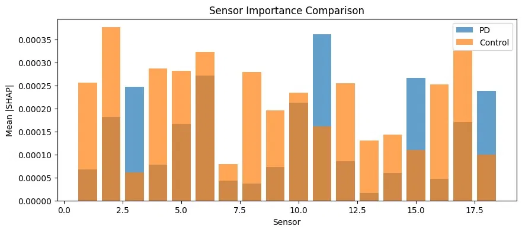

Subject-Independent Parkinson's Disease Detection
| Type | Healthcare ML / Deep Learning |
| Status | Completed |
| Framework | TensorFlow / Keras |
| Modalities | Gait (GRF sensors) / Voice (Mel-spectrogram) |
| Explainability | SHAP (KernelExplainer) |
| Dataset | PhysioNet GaitPDB / Figshare Voice (Iyer et al.) |
| Compute | Google Colab — NVIDIA T4 GPU |
Overview
This project explores subject-independent detection of Parkinson's Disease (PD) using two complementary biomarkers: gait dynamics and voice recordings. Rather than relying on a single signal source, the system builds and compares separate deep learning pipelines for each modality, then explores combining their predictions through late fusion.
A central design constraint throughout the project was strict subject independence — ensuring that no individual ever appears in both the training and test sets across any fold. This is enforced using GroupKFold cross-validation, grouped by subject ID, to produce evaluation numbers that reflect realistic generalization to unseen patients rather than inflated subject-dependent accuracy.
For the gait modality, a hybrid CNN-BiGRU architecture is trained on raw multivariate Ground Reaction Force (GRF) time-series data, capturing both spatial relationships across sensor channels and temporal gait dynamics over time. For the voice modality, a CNN is trained on Mel-spectrogram representations of sustained vowel recordings. Random Forest and SVM classifiers trained on handcrafted gait features serve as traditional ML baselines for comparison.
Data & Modalities
Gait — The PhysioNet Gait in Parkinson's Disease (GaitPDB) dataset provides Ground Reaction Force recordings from Parkinson's patients and healthy controls collected via 18 sensor channels positioned beneath the feet during walking. These channels capture foot pressure distribution, stride dynamics, cadence, and balance as multivariate time-series signals.
Voice — Sustained vowel /a/ recordings from a public figshare dataset (Iyer et al.) are used for the voice modality, capturing PD-related vocal symptoms such as reduced intensity, monotonic speech, and irregular phonation. Audio is loaded at 22,050 Hz and converted into 128×128 Mel-spectrogram images for CNN input.
Preprocessing Pipeline
Gait recordings are parsed per subject from raw sensor files, with subject IDs extracted directly from filenames to preserve group structure for later subject-independent splitting. Each recording is z-score normalized per channel and segmented into overlapping windows of 256 time steps with 50% overlap, producing a large set of fixed-length gait segments while preserving local temporal structure.
To improve robustness, training-only data augmentation is applied per sample — randomly choosing between additive Gaussian noise, small time shifts, or amplitude scaling — so the model sees realistic signal variation without ever touching the validation or test sets.
For voice data, each recording is converted into a normalized Mel-spectrogram and reshaped for direct CNN input, keeping the voice pipeline conceptually parallel to the gait pipeline despite the different signal domain.
Model Architecture
The gait branch uses a hybrid CNN-BiGRU network: three stacked Conv1D blocks (with Batch Normalization and MaxPooling) extract local spatial-temporal features across the 18 sensor channels, progressively increasing feature depth while reducing temporal resolution. A Bidirectional GRU layer then processes the resulting feature sequence in both directions to capture long-range gait dependencies, followed by dropout-regularized dense layers and a sigmoid output for binary classification.
The voice branch mirrors this structure in 2D — stacked Conv2D layers extract frequency-temporal features from the Mel-spectrogram, followed by dense layers with dropout and a sigmoid output.
Random Forest and SVM classifiers are trained on handcrafted statistical features (mean, standard deviation, coefficient of variation, peak count, and left/right asymmetry) extracted from the same gait segments, providing a traditional ML baseline evaluated under identical subject-independent splits.
Validation Strategy
All gait evaluation uses 5-fold GroupKFold cross-validation, grouped by subject ID, so that every subject's segments stay entirely within either the training or test fold. Within each training fold, a further subject-wise split carves out a validation subset used purely for threshold selection — the classification threshold is swept and the value that maximizes balanced accuracy on validation subjects is then applied to the held-out test fold.
Window-level predictions are aggregated to the subject level by averaging probabilities across all segments belonging to a subject before computing final metrics, reflecting how a clinical system would realistically score a single patient rather than scoring isolated gait windows.
Explainability (SHAP)
To make the gait model's predictions interpretable, KernelSHAP is applied to the trained CNN-BiGRU model. Each gait segment is flattened into a feature vector before SHAP computation, using a background set of randomly sampled training segments as the reference distribution. Resulting SHAP values are reshaped back into their original time × sensor structure to produce interpretable heatmaps.
Representative correctly-classified PD and healthy control subjects are selected for detailed analysis, generating SHAP heatmaps, absolute feature importance maps, and comparison plots across sensors and time steps. This highlights which anatomical foot regions and which phases of the gait cycle (e.g. heel-strike, toe-off) most strongly drive the model's classification — connecting model behavior back to clinically known Parkinsonian gait abnormalities.
Multimodal Fusion
As a final step, gait and voice prediction probabilities are combined through late fusion using weighted averaging, sweeping the gait/voice weight to identify the configuration that best leverages both modalities together. This explores whether combining a biomechanical signal (gait) with an acoustic signal (voice) yields stronger discrimination than either modality alone.
Results
Across subject-independent evaluation, the CNN-BiGRU gait model clearly outperformed the traditional ML baselines, particularly on specificity — correctly identifying healthy controls — where the SVM baseline in particular struggled. The voice CNN, trained on a much smaller dataset, showed a strong AUC despite limited raw accuracy, consistent with using a threshold tuned for sensitivity over a small, imbalanced subject pool. Late fusion of gait and voice probabilities produced a modest AUC improvement over the gait model alone at certain weightings, suggesting the two modalities carry partially complementary information even though neither dominates the other outright.
SHAP analysis consistently pointed to specific heel and forefoot sensor regions and to early/late time steps within the gait window as the most discriminative features — aligning with known PD gait abnormalities such as shuffling steps and asymmetric weight distribution.
Implementation
The full pipeline — data loading, preprocessing, model training, baseline comparison, SHAP explainability, and late fusion — was developed and trained on Google Colab using an NVIDIA T4 GPU.
- Python 3.12
- TensorFlow / Keras
- Scikit-learn
- Librosa
- SHAP
- NumPy / Pandas
- Matplotlib
Screenshots




Development Notes
The project intentionally avoided subject-dependent evaluation from the outset, since many published gait-PD studies report inflated accuracy by allowing the same subject's data to leak across train/test splits. Enforcing GroupKFold throughout — including inside the inner validation split used for threshold tuning — was treated as a non-negotiable constraint rather than an optional improvement.
Current development focuses on tightening the multimodal fusion step so that gait and voice probabilities are merged per verified subject rather than aligned by class size, and on extending the framework toward severity prediction rather than binary classification alone.